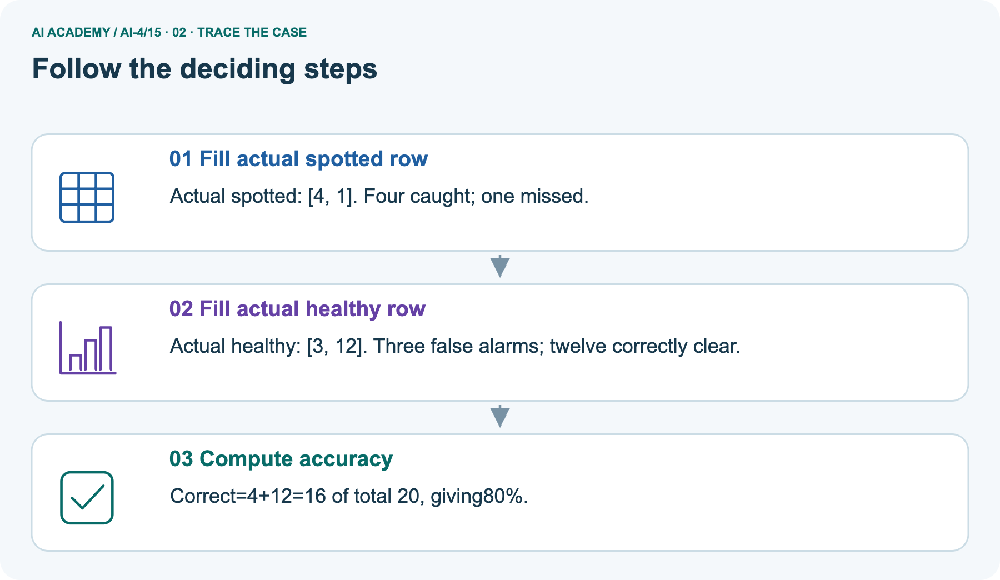
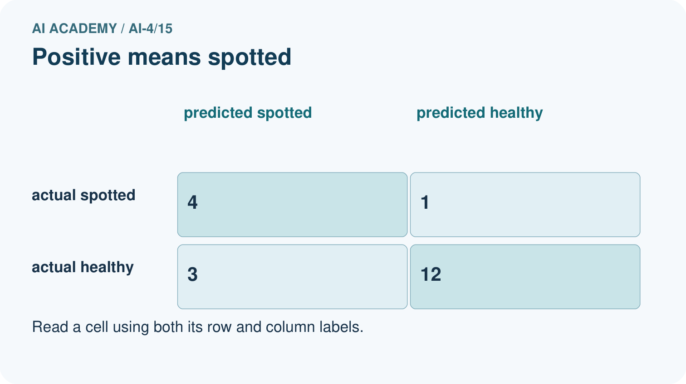
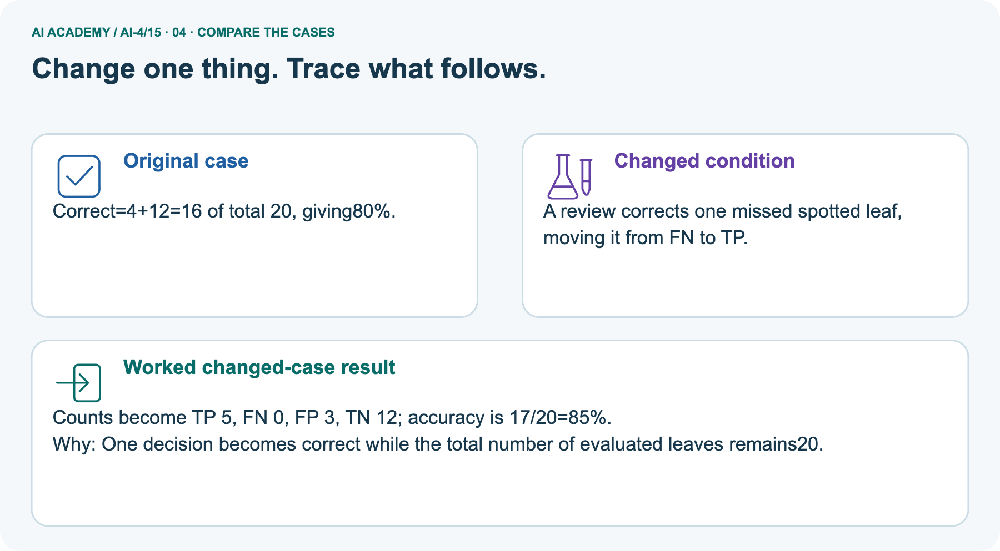
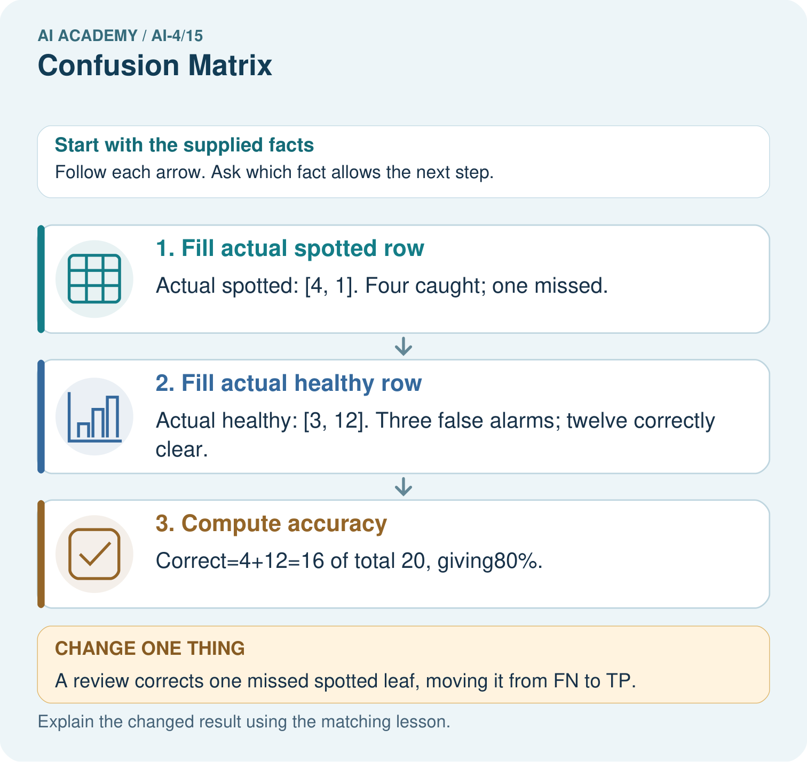
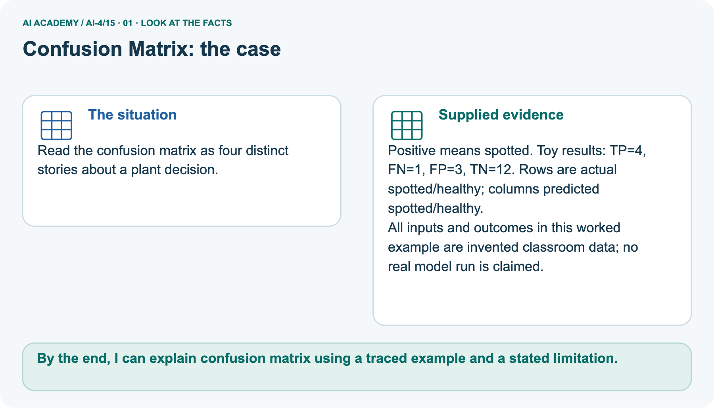
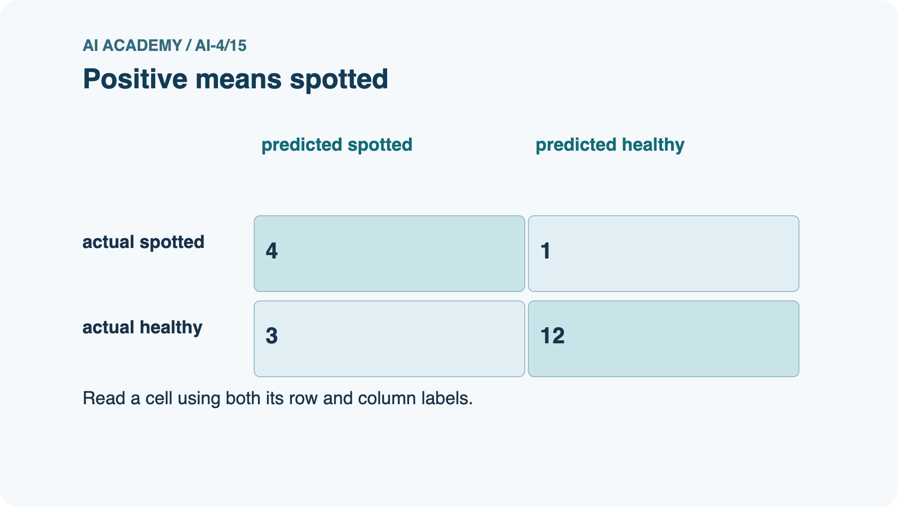
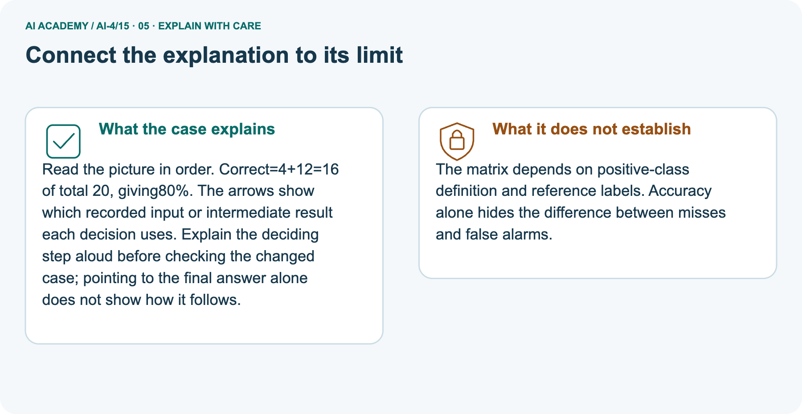

AI Academy · Level 4 · Grade 9 · Week 15 · Student lesson
Confusion Matrix
Learn to understand, design, build, test and explain AI systems responsibly.
Project: Responsible Plant Classifier
THE CONNECTED WEEK
Read the reference. Read the prediction. Count the cell.
Build and interpret confusion counts without hiding error identities or axis conventions.
Keep one habit: Eight complete records → counting program → labelled twenty-case picture → complete Matrix Build → independent new counts.
Main lesson · Section 1
What kind of mistake did the classifier make?
Preserve the reference label, prediction and example ID before counting.
Learning goals
I can build a labelled confusion matrix from matched reference and prediction pairs.
I can distinguish false positives from false negatives using a declared positive class.
I can check matrix totals and explain why equal accuracy can hide different errors.
Recall the saved classifier pairs
Close your notes first. A rough first answer helps us choose the right starting point; it is not a score for your ability.
Without opening the old lesson, explain one key idea from Scores and Calibration Intuition. Give an example and a mistake that the idea helps you avoid.
Without opening the old lesson, explain one key idea from Nearest Neighbors. Give an example and a mistake that the idea helps you avoid.
Without opening the old lesson, explain one key idea from Dataset Cards. Give an example and a mistake that the idea helps you avoid.
Why should a reproducible run save predictions linked to example IDs rather than only an accuracy score?
End goal
By the end, I can explain confusion matrix using a traced example and a stated limitation.
Earlier wording, alternatives and picture transcripts
Your learning target
Remember before reading
After trying, check the relevant lesson or ask your teacher. Change the part of your explanation that the evidence shows was wrong.
A confusion matrix separates true positives, false positives, false negatives, and true negatives so error types remain visible.

LEARNING TARGET Positive=spotted. TP=6,FN=2,FP=3,TN=9. Draw a matrix with actual labels in rows and predictions in columns. Compute total and accuracy.
Builder name and experiment date:
Readiness for the connected explanation
This week’s end goal
Main lesson · Section 2
Declare the positive class and both axis orders
Positive names the condition of interest, not a good outcome.
Matrix purpose and new fictional evaluation source
A confusion matrix shows which labels a classifier mixes up. It counts examples after predictions are made; it does not fit or repair the classifier. Week 13 had reference/prediction pairs clear/clear, blocked/blocked, clear/blocked. A labelled table can preserve the type of that error as well as the total score.
This week uses eight new fictional evaluation records from a frozen classifier. They are not extra predictions from the Week 13 code. Each ID appears once with a reviewed reference and one prediction. The grouped table below lists every ID. Keep reference and prediction paired by ID before counting.
Complete eight-record grouped table
| Evaluation IDs | Reference | Prediction |
|---|---|---|
| V1 V2 | clear | clear |
| V3 | clear | blocked |
| V4 V5 | blocked | clear |
| V6 V7 V8 | blocked | blocked |
Reference-row and prediction-column contract
Use reference labels for rows and predicted labels for columns. On both axes the order is clear, then blocked. Declare blocked as the positive class and clear as negative.
Positive means the condition of interest, not good or safe. A missed blocked case and a false alarm are different errors.
Earlier wording, alternatives and picture transcripts
PICTURE ENTRY
Notice → Predict → Explain
Begin with visible evidence; do not explain more than the picture and information support.
MYSTERY The team must use confusion matrix to solve a model-building problem. What information do they have? What important evidence is still missing?
Name three visible details without interpreting them.
Predict the data, model, or evaluation decision being made.
Identify one hidden assumption that could change the result.
State what evidence would confirm or reject your prediction.
My prediction and supporting evidence:
A closer explanation
Main lesson · Section 3
Put each reference/prediction pair in exactly one cell
Axis labels make the numbers interpretable.
Complete eight-record counting program
pairs = [("V1", "clear", "clear"),
("V2", "clear", "clear"),
("V3", "clear", "blocked"),
("V4", "blocked", "clear"),
("V5", "blocked", "clear"),
("V6", "blocked", "blocked"),
("V7", "blocked", "blocked"),
("V8", "blocked", "blocked")]
labels = ["clear", "blocked"]
index = {label: i for i, label in enumerate(labels)}
counts = [[0, 0], [0, 0]]
for item_id, reference, prediction in pairs:
counts[index[reference]][index[prediction]] += 1
print(counts)
correct = counts[0][0] + counts[1][1]
print(correct, len(pairs))Trace IDs and assumptions
index maps clear to 0 and blocked to 1. Each paired record adds one to its reference row and prediction column. The script prints [[2, 1], [2, 3]] then 5 8. It assumes unique IDs and only these two labels.
Check IDs and missing or unresolved references before counting; the code does not validate all those conditions.
Read the labelled count matrix
| Reference rows | Predicted clear | Predicted blocked |
|---|---|---|
| Reference clear | 2 | 1 |
| Reference blocked | 2 | 3 |
Verify diagonal, errors and total
The diagonal cells count correct predictions: 2+3=5. Off-diagonal cells count mistakes: 1+2=3. Every record must contribute exactly once. This is a count matrix, not percentages or probabilities.
Keep the axis labels even when copying the numbers.
Earlier wording, alternatives and picture transcripts
ML MECHANISM
Input → Model → Evidence
Trace the information, fitted behavior, and evaluation proof separately.


QUESTION Construct all four cells from twenty predictions and verify the total.
MODEL IDEA A confusion matrix separates true positives, false positives, false negatives, and true negatives so error types remain visible.
PROOF NEEDED Use an unseen case, visible calculation, error analysis, and a stated limitation.
UNDER THE HOOD For spotted=positive: TP=6, FP=3, FN=2, TN=9. Check total: 6 + 3 + 2 + 9 = 20 cases.
Draw a fresh data → model → prediction → evaluation trace:
A closer explanation
Connect the picture and the explanation
Point to the input, the deciding step and the result in this week’s visual. Explain the same step in ordinary words. A picture helps when you can say what each part represents.
Main lesson · Section 4
Compare two error types that one accuracy total hides
A false alarm and a missed positive tell different stories.
Four evaluation conditions

NORMAL Expected data and expected behavior.

Keep this boundary clear
BOUNDARY Value close to a threshold, ambiguous label, or uncertain prediction.

MISSING Necessary field, label, source, or measurement is unavailable.

SHIFTED New lighting, species, device, subgroup, or time condition.
Keep the claim bounded
RELEASE RULE Passing one case never proves generalization. Predefine expected behavior for all four categories.
Choose a revealing case
Which case most threatens today's claim, and why?
Predict the supplied changed case
Change: A review corrects one missed spotted leaf, moving it from FN to TP.
Check after predicting
Prediction: Counts become TP 5, FN 0, FP 3, TN 12; accuracy is 17/20=85%.
Reason: One decision becomes correct while the total number of evaluated leaves remains20.
Earlier wording, alternatives and picture transcripts
EVALUATION DESIGN
Four Tests, Four Kinds of Evidence
A system is not understood until it survives more than one comfortable example.
NORMAL Expected data and expected behavior.
BOUNDARY Value close to a threshold, ambiguous label, or uncertain prediction.
MISSING Necessary field, label, source, or measurement is unavailable.
SHIFTED New lighting, species, device, subgroup, or time condition.
Change one thing in the pictured case
Main lesson · Section 6
Read the four stories through their labelled cells
Changing one decision moves one record; it does not add a new record.
Complete pictured facts and axis-order scope
Read the confusion matrix as four distinct stories about a plant decision.
Positive means spotted. Toy results: TP=4, FN=1, FP=3, TN=12. Rows are actual spotted/healthy; columns predicted spotted/healthy.
All inputs and outcomes in this worked example are invented classroom data; no real model run is claimed.
Main corridor matrix uses clear/blocked on both axes: [[2,1],[2,3]], positive blocked, total8,correct5. The pictured leaf matrix uses spotted/healthy on both axes: [[4,1],[3,12]], positive spotted,total20,correct16. Both use reference rows/prediction columns; the category order differs, so do not copy cell positions without labels.
In the pictured change, one output is corrected by review while its reference stays spotted: FN decreases1and TP increases1. Report this as a reviewed outcome, not improved untouched model accuracy; preserve the frozen model’s original prediction and score.
Trace actual spotted and healthy rows



Read the picture one step at a time
Read the picture in order. Correct=4+12=16 of total 20, giving80%. The arrows show which recorded input or intermediate result each decision uses.
Explain the deciding step aloud before checking the changed case; pointing to the final answer alone does not show how it follows.
Inspect the original labelled matrix



Predict a reviewed FN-to-TP decision change
Change one thing: A review corrects one missed spotted leaf, moving it from FN to TP. Predict the result before checking the explanation. What remains the same?
Check after predicting



Explain limits and total preservation
The matrix depends on positive-class definition and reference labels. Accuracy alone hides the difference between misses and false alarms.
Read the labelled picture: Why is adding TP alone without reducing FN an incorrect revision? Point to the relevant step in the picture, then write the changed result and the rule or evidence that supports it.
Return to corridor V3/V4 error identities
Blocked is the positive class
True means prediction agrees with the reference. It does not prove that the reference annotation is infallible. Resolve disputed labels with the documented review policy rather than silently changing them to match predictions.
Earlier wording, alternatives and picture transcripts
WORKED EVIDENCE
Reason Step by Step
Predict first. Then check each step. A correct answer without visible evidence cannot be audited.

STEP 1 For spotted=positive: TP=6, FP=3, FN=2, TN=9.
STEP 2 Check total: 6 + 3 + 2 + 9 = 20 cases.
STEP 3 Correct predictions = TP + TN = 15; accuracy = 15 ÷ 20 = 75%.
STEP 4 Inspect false alarms and misses separately before choosing an improvement.
CHECK Verify the denominator, unit, split, class definition, and data version before interpreting a score.
Recalculate, retrace, or restate the evidence independently:
A closer explanation
Learn from the worked case
Cover the result before checking it. Say what is given, choose the procedure, and follow one step at a time. Then uncover the result and explain your first mismatch. Ask why a step is allowed, not only what number it produces.
A pictorial worked case: Confusion Matrix
The facts we will use



Why this result follows
What this example does not establish
Main lesson · Section 7
Find a cell named without its class or axes
Keep reference quality and excluded records visible.
Diagnose the main claim
Diagnose one cause and name the cleanest next experiment:
CLAIM TO CHALLENGE The diagonal alone tells everything important about a classifier.
Check interpretation and evidence limits
Always report the evaluated split, number of records, reference and prediction axes, label order and positive class. Reversing the axis order changes positions, not the underlying outcomes.
Transposing rows and columns swaps the two kinds of error unless the labels are corrected. Read the headers before interpreting a diagram from another source.
A zero cell means no such event in this evaluated set, not that it is impossible. A confusion matrix does not show the cause of errors, label quality or performance on future data. Keep the ID-level records for investigation.
Next week examines accuracy when class counts are unequal.
Earlier wording, alternatives and picture transcripts
ERROR DETECTIVE
Compare → Diagnose → Repair
Do not patch the answer. Find the earliest unsupported assumption, data problem, or experiment error.

| Evidence record | Expected | Actual | Likely cause / next test |
|---|---|---|---|
| normal case | passes | ||
| boundary case | defined behavior | ||
| missing case | safe fallback | ||
| shifted case | measured limit |
A closer explanation
Main lesson · Section 8
Practise error types and verify every marginal total
Equal accuracy can conceal a different mix of mistakes.
Try W2 with the eight-record source
Use workbook W2 for the connected example “Confusion matrices”. First fill the input and rule boxes. Try the middle steps before asking for a hint. After a hint, try the next step yourself.
| Plan | Do | Check |
|---|---|---|
| What is given? Which rule or procedure applies? | Record each intermediate step. | Does the result follow? What remains unknown? |
Explain your trace to a partner. Your partner points to one step to check. Swap roles on the next case. Each person writes their own explanation.
Read row/column totals and alternative error pattern
Row totals are 3 reference-clear and 5 reference-blocked. Column totals are 4 predicted-clear and 4 predicted-blocked. All four cells sum to 8. Accuracy is the diagonal total divided by the total: 5/8, or 62.5 percent. The Week 13 three-record matrix was [[1,1],[0,1]] in this same axis order, giving 2/3.
Another classifier on these same eight reference-labelled records could have matrix [[3,0],[3,2]]. It also gets 5/8 correct, but has zero false positives and three false negatives.
Our worked classifier has one false positive and two false negatives. Equal accuracy does not settle which error pattern is preferable; consider the task and evidence before choosing.
Challenge positive-means-good reasoning
Use the worked case for Confusion matrices. Proposed explanation: “Positive means good”. Decide whether this explanation is supported. Point to the step or supplied fact that decides; explain your repair if needed.
Answer on your own before discussion. If you are unsure, say which step you need help with.
Explain the pictured one-record move
Why is adding TP alone without reducing FN an incorrect revision? Point to the relevant step in the picture, then write the changed result and the rule or evidence that supports it.
Reserve the independent new counts
This is supported practice. Keep the separately named independent case for an attempt before feedback.
Earlier wording, alternatives and picture transcripts
ML STUDIO
Specify Before You Run
A trustworthy result can be reproduced from the recorded data, code, settings, and evaluation rule.

Experiment record
QUESTION + intended use + success threshold
DATA version + grouped split + leakage check
CODE/preprocessing + features + model + settings + seed
METRICS + positive class + units + denominators
PREDICTIONS + errors + subgroup slices + limitations
HUMAN reviewer + release, revise, limit, or stop decision
Write the minimum record needed to reproduce today's result:
A closer explanation
Practise with less help: Explain the two error types
Check your reasoning
Explain the picture
Main lesson · Section 9
Run Matrix Build with all twenty pairs supplied
A count audit should account for every example exactly once.
Complete twenty fictional reference/prediction pairs
| Case ID | Reference | Prediction |
|---|---|---|
| C01 | spotted | spotted |
| C02 | spotted | spotted |
| C03 | spotted | spotted |
| C04 | spotted | spotted |
| C05 | spotted | healthy |
| C06 | healthy | spotted |
| C07 | healthy | spotted |
| C08 | healthy | spotted |
| C09 | healthy | healthy |
| C10 | healthy | healthy |
| C11 | healthy | healthy |
| C12 | healthy | healthy |
| C13 | healthy | healthy |
| C14 | healthy | healthy |
| C15 | healthy | healthy |
| C16 | healthy | healthy |
| C17 | healthy | healthy |
| C18 | healthy | healthy |
| C19 | healthy | healthy |
| C20 | healthy | healthy |
Declare axes and trace all totals
Matrix Build uses the twenty C01–C20 records, matching the original pictured counts. Declare spotted positive and use spotted/healthy on both reference-row and prediction-column axes. Each ID contributes once: C01–C04 TP, C05 FN, C06–C08 FP, C09–C20 TN. Verify row totals5and15, column totals7and13, total20,correct16,accuracy80%.
This lab is separate from the eight-record corridor example and the independent new count set.
Normal, axis-order, missing-reference and positive-definition probes
| Complete matrix probe | Expected bounded check |
|---|---|
| Normal C05 spotted/healthy | False negative, first reference row/second prediction column. |
| Boundary reverse both label orders to healthy/spotted | Same records become [[12,3],[1,4]], still16/20correct; labels must travel with cells. |
| Missing reference on an extra proposed C21 | Cannot place an unknown reference as healthy; resolve or document exclusion separately, with its denominator. |
| Changed positive definition healthy, unchanged C01–C20 records | With original spotted/healthy axes unchanged: TP12,TN4,FP1,FN3; same numeric matrix and accuracy. |
Count, verify and explain
Count each supplied C01–C20 card into the labelled matrix, then verify all totals independently before checking the optional complete program. Explain C05andC06in ordinary words rather than only abbreviations. Compare the axis-order and positive-definition probes separately: changing display order and changing the condition of interest have different effects.
Retain original frozen predictions when recording reviewed decisions. No model is fitted or repaired by calculating the table. Keep the independent new TP/FN/FP/TN counts for an unaided first attempt.
Optional complete checked counting program
def build_counts(pairs, labels):
if len(labels) != 2 or len(set(labels)) != 2:
raise ValueError('Declare exactly two distinct labels in axis order')
ids = [item_id for item_id, actual, predicted in pairs]
if len(ids) != len(set(ids)):
raise ValueError('Repeated evaluation ID: review the source')
index = {label: i for i, label in enumerate(labels)}
counts = [[0, 0], [0, 0]]
for item_id, actual, predicted in pairs:
if actual not in index or predicted not in index:
raise ValueError('Missing, unresolved or unsupported label')
counts[index[actual]][index[predicted]] += 1
total = sum(sum(row) for row in counts)
correct = counts[0][0] + counts[1][1]
return counts, correct, total
# The complete printed C01–C20 fixture, with reference first in every pair.
pairs = [(f'C{i:02}', 'spotted', 'spotted') for i in range(1, 5)]
pairs += [('C05', 'spotted', 'healthy')]
pairs += [(f'C{i:02}', 'healthy', 'spotted') for i in range(6, 9)]
pairs += [(f'C{i:02}', 'healthy', 'healthy') for i in range(9, 21)]
labels = ['spotted', 'healthy']
counts, correct, total = build_counts(pairs, labels)
print(labels, counts)
print(correct, total, correct / total if total else 'unavailable')
# Empty evaluation has zero counts but no observed accuracy, never an invented 0%.
Retain evidence and actual execution status
| Case | Prediction | Actual | Calculation / evidence | Meaning / next test |
|---|---|---|---|---|
| Normal | ||||
| Boundary | ||||
| Missing | ||||
| Shifted |
Before trying: what do I expect, and why? While trying: which step could first go wrong? Afterwards: what did I actually observe, and what should change? Keep “not run” if you only traced the procedure.
Earlier wording, alternatives and picture transcripts
EVIDENCE LAB
Predict → Run → Calculate → Interpret
Keep the test conditions fixed, record every result, and change only one planned factor.

1. Write the hypothesis and expected evidence before running.
2. Matrix Build: convert twenty actual/predicted pairs into four cells, recompute totals, and explain each error in plain language.
3. Run one normal, one boundary, one missing, and one shifted case.
4. Calculate the metric from raw counts or row-level errors.
5. Interpret what changed, what did not, and what remains unsafe or unknown.
Plan → try → check
Main lesson · Section 14
Try alone: build a matrix from fresh error counts
State the class convention, verify the total and show the accuracy denominator.
Complete selected counts and scope
On20 cases: true positives5, false negatives4, false positives2, true negatives9. Build the confusion matrix with actual class as rows and predicted class as columns. Compute accuracy.
Declare actual positive/negative as row order and predicted positive/negative as column order before placing the supplied counts. If you illustrate positive as spotted, label that interpretation explicitly; the generic count task itself does not supply a diagnosis. Use the new20-case totals, not the pictured counts. No row-level IDs or subgroup evidence are provided, so do not invent them.
First attempt and support record
Attempt this case before feedback. Record any help. Earlier examples below are further practice; a case already practised with feedback cannot establish fresh transfer.
Your teacher has the independent answer and scoring criteria. Complete the matching workbook week to keep your practice evidence together.
Use feedback after trying
Attempt the independent case before hints. Record whether you worked alone, used a hint or followed a model. After feedback, fix the first unsupported step and explain why it changed.
A later check uses a changed case, not a copied answer.
Earlier wording, alternatives and picture transcripts
Independent case: Changed independent case
Week 15 Independent application
Close the worked explanation. Apply the idea to this different question without copying.
Treat fern as positive. Counts are TP=6, FP=2, FN=3 and TN=9. How many examples and how many correct predictions are there?
My answer, with a trace, calculation or supporting evidence
Create and test
Change one relevant detail. Predict the result before testing. Include a boundary or missing-information case when it helps reveal a limit.
My changed input and expected result
Connect to your project
Publish the Plant Classifier confusion matrix with positive-class definition, counts, denominator, and test-set version.
The evidence I will keep
Transfer practice from the original programme
Positive=spotted. TP=6,FN=2,FP=3,TN=9. Draw a matrix with actual labels in rows and predictions in columns. Compute total and accuracy.
Use feedback to improve
Main lesson · Section 11
Keep the project’s error stories beside its total score
A labelled matrix can be checked against the underlying pair record.
Project artifact and evidence
THIS WEEK'S CHECKPOINT Publish the Plant Classifier confusion matrix with positive-class definition, counts, denominator, and test-set version.
Save the model/data/label versions, frozen ID-linked predictions, reviewed references, positive definition, axis orders, matrix counts, totals and exclusions. If a human changes an output after review, keep that outcome separate from the original model-only score. A matrix reveals error types but does not verify reference truth, equal consequences or performance on new conditions.
For your Responsible Plant Classifier, save the input, procedure, observed result and limitation of this check.
Label this worked example as practice; use a different, previously unreviewed case when checking independent understanding.
Limits and human decision
Which requirement or risk does this artifact address?
Which dataset, split, code, and metric version does it use?
What normal and shifted cases were tested?
What remains uncertain or weak?
What decision still belongs to a teacher or qualified human?
RESPONSIBLE RELEASE Never use this classroom prototype for medical, pesticide, agricultural, or other consequential decisions.
My evidence-linked project decision:
Earlier wording, alternatives and picture transcripts
CUMULATIVE PROJECT
Responsible Plant Classifier
Every week adds one reviewable artifact to the same evidence-based capstone.

Evidence for your project
Main lesson · Section 16
Finish with a labelled error and its denominator
Explain why identical accuracies need not tell the same story.
Retrieve and explain
Close your notes. Explain this goal in your own words: Build a labelled confusion matrix from matched reference and prediction pairs
Plan a changed-case return
If you are unsure, return to the worked picture and explain one arrow. If you are ready, change an input or assumption and justify your prediction.
Save your workbook evidence. At the next review, try a different case before opening your old answer.
Reference bank and extra practice
Choose the reference that helps your next step.
Reference · Words for the current experiment
Reference · Section 5
Reference · Words for the current experiment
Tie each word to a particular input, fitted choice or evidence record.
Core vocabulary
| Term | Precise meaning | My ML example |
|---|---|---|
| true positive | positive case predicted positive | |
| false positive | negative case predicted positive | |
| false negative | positive case predicted negative | |
| true negative | negative case predicted negative |
Closer-explanation terms
| Word | Meaning |
|---|---|
| Confusion matrix | A table counting reference and prediction combinations |
| Positive class | The class chosen as the condition of interest |
| False positive | A positive prediction when the reference is negative |
| False negative | A negative prediction when the reference is positive |
Earlier wording, alternatives and picture transcripts
VOCABULARY
Words You Can Calculate and Defend
A definition matters when it lets you interpret a new dataset, model, or result.


MISCONCEPTION TO REPAIR The diagonal alone tells everything important about a classifier.
Repair the claim using a definition, calculation, or test record:
Words used in the closer explanation
Extra challenge · Build a stronger explanation
Reference · Section 10
Extra challenge · Build a stronger explanation
Choose the next useful challenge after the main route.
Thinking ladder
DEFINE Use all four terms precisely: true positive, false positive, false negative, true negative.
CALCULATE Reproduce the worked evidence with units and denominator.
TRACE Explain the data, code or decision path.
DIAGNOSE The diagonal alone tells everything important about a classifier.
TRANSFER Solve a fresh dataset or model case.
IMPROVE Change one cause and rerun fixed evidence.
DEFEND State intended use, metric, limitation, and human responsibility.
MASTERY RULE A coached calculation becomes mastery only after a different case is completed independently.
Earlier wording, alternatives and picture transcripts
MASTERY
From Knowing the Word to Owning the Idea
Move upward only when you can produce evidence without copying the example.

Reference · Inspect your evidence
Reference · Section 12
Reference · Inspect your evidence
Use after practice; keep the selected fresh TP5/FN4/FP2/TN9 count task for the individual attempt.
Experiment evidence checklist
□ Define the task, feature/target roles, and intended-use boundary.
□ Show the calculation, code trace, or experiment record.
□ Test a normal case and one revealing boundary, missing, or shifted case.
□ Diagnose one failure without changing several factors at once.
□ Name a limitation, fairness concern, and the human-review action.
Independent evidence and defense:
My level: □ Not yet □ With one hint □ Independently □ I can teach and defend it
Earlier wording, alternatives and picture transcripts
INDEPENDENT PROOF
Explain • Calculate • Transfer • Defend
Complete this with a fresh case after guided practice and compare it with the mastery criteria.

REQUIRED PROOF Construct all four cells from twenty predictions and verify the total.
NEXT BRIDGE Carry the experiment evidence into: Accuracy and Imbalance.
Extra practice · Earlier complete case
Reference · Section 13
Extra practice · Earlier complete case
Attempt the question before opening its worked explanation.
Situation and question
Positive is spotted. TP=8, FP=2, FN=4, TN=6.
Build actual-row/predicted-column matrix and total.
Your explanation
Which detail supports the answer, and why does it matter?
Check after trying
Actual spotted row is 8 spotted,4 healthy; actual healthy row is 2 spotted,6 healthy. Total=20; correct=14. State axes and positive class.
| Evidence or stage | Value or result |
|---|---|
| True positive | 8 |
| False negative | 4 |
| False positive | 2 |
| True negative | 6 |
Earlier wording, alternatives and picture transcripts
Week 15 Worked case
Use the supplied details to practise the weekly concept before attempting the independent question. This case extends the illustrated lesson.
The situation
The question
Worked explanation
Explain it in your own words
Trace the supplied case visually
Actual rows, predicted columns
Positive is spotted. TP=8, FP=2, FN=4, TN=6.
Build actual-row/predicted-column matrix and total.
Actual spotted row is 8 spotted,4 healthy; actual healthy row is 2 spotted,6 healthy. Total=20; correct=14. State axes and positive class.
Reference · Earlier route checklist
Reference · Section 15
Reference · Earlier route checklist
Use one main route; revisit the checklist only when useful.
Checklist and first prediction
| By the end, I can | How I will show it |
|---|---|
| Build a labelled confusion matrix from matched reference and prediction pairs | Explain the deciding step, show a trace or test, and state one limit. |
| Distinguish false positives from false negatives using a declared positive class | Explain the deciding step, show a trace or test, and state one limit. |
| Check matrix totals and explain why equal accuracy can hide different errors | Explain the deciding step, show a trace or test, and state one limit. |
Remember → watch and explain → try with help → investigate → try independently → keep project evidence. Your teacher may spread this lesson across several classes.
Keep your first prediction. Compare it with what the evidence shows and explain any change.
Earlier wording, alternatives and picture transcripts
Start with this question: Read the confusion matrix as four distinct stories about a plant decision.
Extra practice · Predict, check and repair
Reference · Section 17
Extra practice · Predict, check and repair
Keep supported feedback separate from the reserved independent case.
First supported question and hint
Read the confusion matrix as four distinct stories about a plant decision.
Which labelled step matches this detail? Correct=4+12=16 of total 20, giving80%.
1. Compute accuracy
2. Fill actual spotted row
3. Fill actual healthy row
Hint if needed: Read the steps in the pictorial case. Match the supplied detail to the stage that performs or records it.
Practice 1: explain the deciding evidence
Check the first explanation
After your attempt, compare with the supported explanation: Compute accuracy Correct=4+12=16 of total 20, giving80%. Read the picture in order. Correct=4+12=16 of total 20, giving80%.
The arrows show which recorded input or intermediate result each decision uses. Explain the deciding step aloud before checking the changed case; pointing to the final answer alone does not show how it follows.
Changed-case question and hint
Changed-case practice: A review corrects one missed spotted leaf, moving it from FN to TP. Which conclusion is supported by the supplied facts?
1. Counts become TP 5, FN 0, FP 3, TN 12; accuracy is 17/20=85%.
2. This one example guarantees correct results for every future input.
3. We can decide the result without examining the changed input or the procedure.
Hint if needed: Use the changed condition and the deciding step in the pictorial trace. The answer must say what follows from those facts.
Practice 2: explain the deciding evidence
Check the changed explanation
After your attempt, compare with the supported explanation: Counts become TP 5, FN 0, FP 3, TN 12; accuracy is 17/20=85%. One decision becomes correct while the total number of evaluated leaves remains20.
Repair and keep the record
Review Scores and Calibration Intuition (ai-4/14). Goal: Interpret calibration using groups of forecasts. Short practice: Does a calibrated 0.8 score mean every such leaf is spotted?
Point to the relevant step in the picture, then write the changed result and the rule or evidence that supports it.. Return to this week and explain what you changed.
Review Nearest Neighbors (ai-4/12). Goal: Compute absolute distances and rank training neighbours. Short practice: Why is the k=1 outcome at length5 not uniquely determined without a tie rule?
Point to the relevant step in the picture, then write the changed result and the rule or evidence that supports it.. Return to this week and explain what you changed.
Review Dataset Cards (ai-4/9). Goal: Inspect row meaning missing values and repeated records. Short practice: What two counts should the revised card show?
Point to the relevant step in the picture, then write the changed result and the rule or evidence that supports it.. Return to this week and explain what you changed.
The browser lab lets you edit the supported Python examples already included in this lesson. Predict first, run, inspect the actual output or error, change one input, then run again.
Keep code, predictions, actual results and a reasoned revision together. On paper, label your result as a trace rather than an execution.
Use Download completed work in the hosted lesson to export your answers, reflections, practice feedback and code-run evidence. Open the HTML copy to read or print it.
Drafts stay in this browser when storage is available; clear drafts on a shared device.
Earlier wording, alternatives and picture transcripts
Use this supported practice once, in the browser or on paper. Keep the reserved independent assessment for a separate first attempt before teacher feedback.
Repair a missing building block
Predict, run and debug
Keep your completed work
Reference · The six-picture journey
Reference · Section 18
Reference · The six-picture journey
Choose the picture needed for the current question.
01. Confusion Matrix: the case



Read the confusion matrix as four distinct stories about a plant decision. Supplied facts: Positive means spotted. Toy results: TP=4, FN=1, FP=3, TN=12. Rows are actual spotted/healthy; columns predicted spotted/healthy.
All inputs and outcomes in this worked example are invented classroom data; no real model run is claimed.
Point to the given fact that matters most. Explain why it matters.
02. Follow the deciding steps
Fill actual spotted row: Actual spotted: [4, 1]. Four caught; one missed. → Fill actual healthy row: Actual healthy: [3, 12].
Three false alarms; twelve correctly clear. → Compute accuracy: Correct=4+12=16 of total 20, giving80%.
Point to each numbered stage and explain which recorded input it uses.
03. Positive means spotted



Positive means spotted. actual spotted: predicted spotted = 4, predicted healthy = 1. actual healthy: predicted spotted = 3, predicted healthy = 12.
Read the labels and values. Explain the relationship the model shows.
04. Change one thing. Trace what follows.
Original case: Correct=4+12=16 of total 20, giving80%. Changed condition: A review corrects one missed spotted leaf, moving it from FN to TP. Expected result: Counts become TP 5, FN 0, FP 3, TN 12; accuracy is 17/20=85%.
Reason: One decision becomes correct while the total number of evaluated leaves remains20.
Predict before checking the worked changed-case result. Name what changed and what the supplied facts allow you to conclude.
05. Connect the explanation to its limit



Read the picture in order. Correct=4+12=16 of total 20, giving80%. The arrows show which recorded input or intermediate result each decision uses.
Explain the deciding step aloud before checking the changed case; pointing to the final answer alone does not show how it follows. Limit: The matrix depends on positive-class definition and reference labels.
Accuracy alone hides the difference between misses and false alarms.
Explain the case, then point to a limit on the claim.
06. Make the idea visible in your project


For your Responsible Plant Classifier, save the input, procedure, observed result and limitation of this check.
Label this worked example as practice; use a different, previously unreviewed case when checking independent understanding. Draw your input, deciding step, result and limit.
Supported question: Why is adding TP alone without reducing FN an incorrect revision? Point to the relevant step in the picture, then write the changed result and the rule or evidence that supports it.
Draw your project trace and justify the deciding step using evidence.